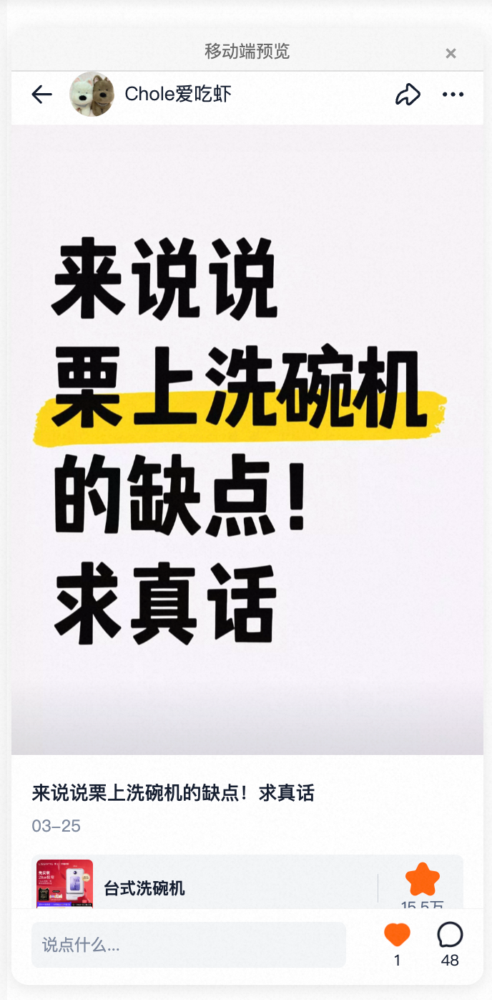
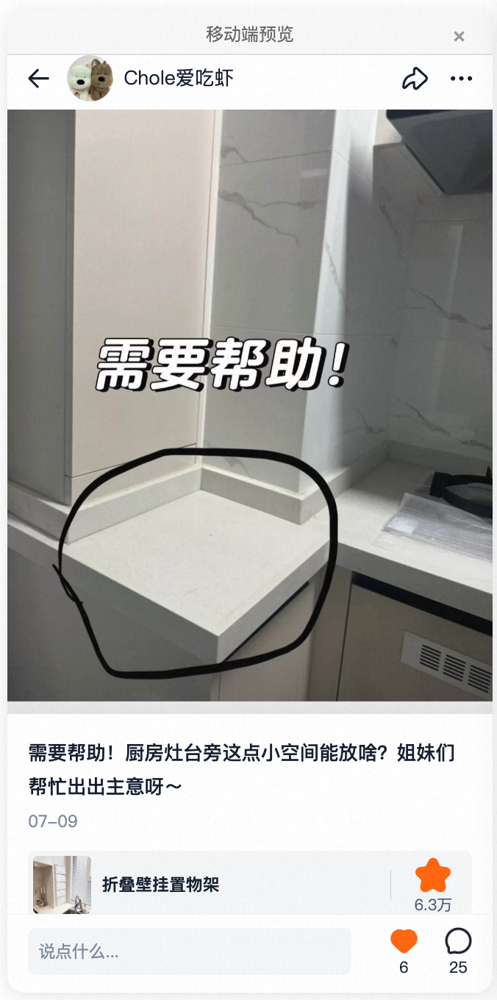
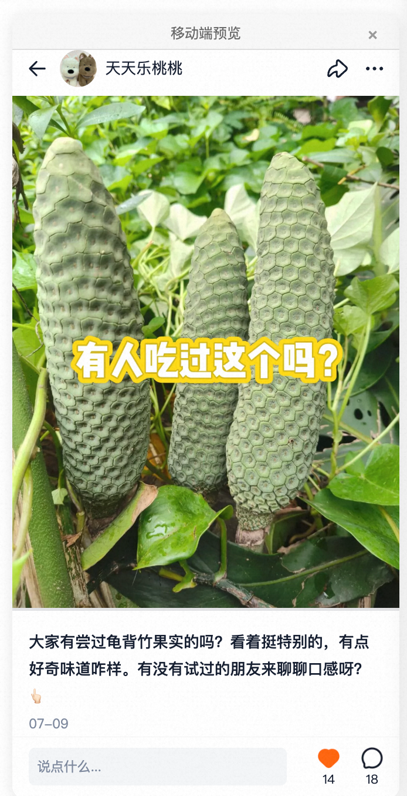
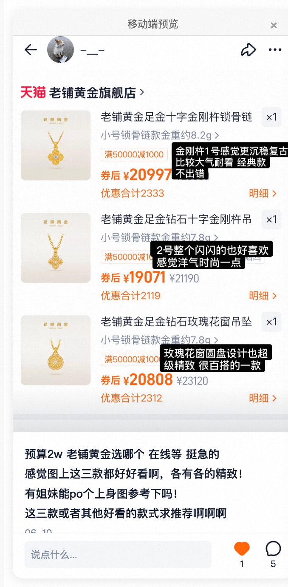
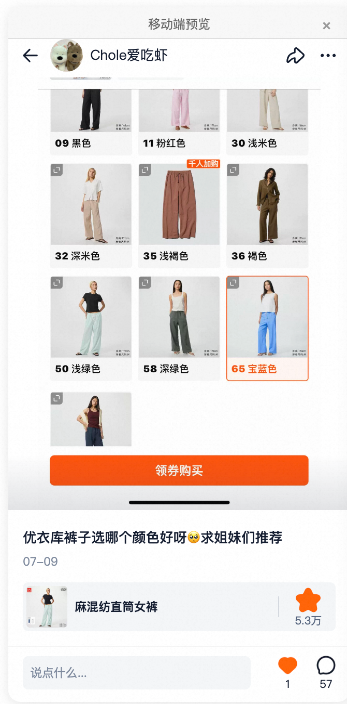
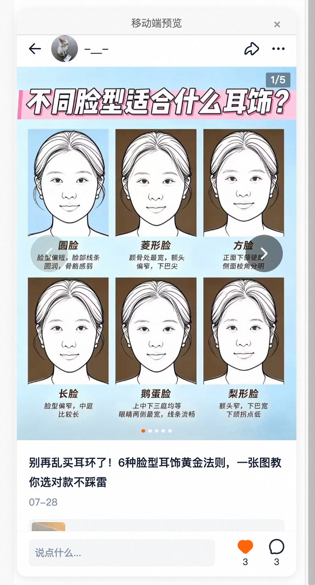
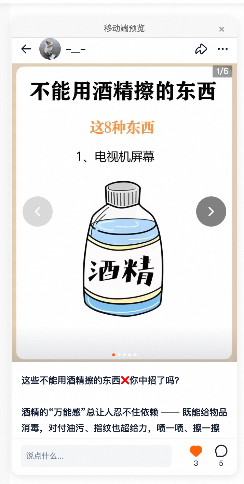
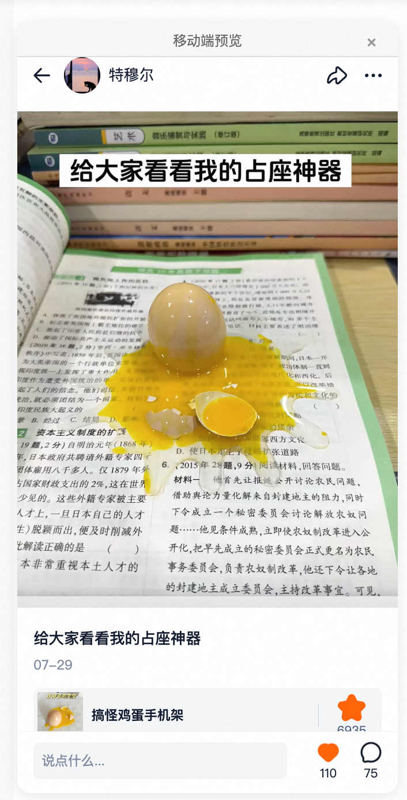

科普贴
点击率远超大盘
S1 作品集 · 内容运营 → 产品运营
以内容策划扩大供给、提升互动转化，以自动化升级支撑产能规模化，并逐步向产品运营迁移、承接 AI 内容聚合产品与分享业务。
项目一 · 扩量与转化提升
高曝光商品选题池趋于饱和，存量高流量商品已完成覆盖，供给增长面临天花板。目标是扩大内容供给规模、提升内容互动转化水平。
稳住大盘标品基本盘，拓展非标品与小流量商品，释放长尾商品供给潜力。
传统商品帖之外，探索新增内容讨论帖、图片封面帖等类型，并基于数据反哺推动科普贴扩量。







点击率远超大盘
点击率远超大盘
互动评论双高

点击率领先
互动表现领先
项目二 · 生产提效
话题运营全链路高度依赖人工逐条执行，产能随人力线性增长，无法支撑供给规模化目标。
目标：构建批量化、自动化的内容生产模式；重复性执行环节交由系统承接，人力由 3 人释放至 1 人，人工聚焦创意筛选与质量把关。
优化 AI 自动改写提示词，使改写效果贴近真人口吻。
以【标题】【关键词】【提示词】结构化字段驱动一键批量生成原创封面，替代「复制粘贴—截图—转链接」的人工流转，并沉淀文字封面模版库，形成可复用的视觉资产。
手动复制粘贴到小红书生图，截图保存，发回钉钉转链接
1 条人工 2 分钟，每日约投入 30 分钟–1 小时
填写结构化字段一键批量生成，批量生成 3–5 分钟，人工调整检查 5–20 分钟
建立模版字段与风格参照体系，统一画风、固定生成模型，生图质量与效率双提升。
画风不一致、模型混乱
风格统一、模型可控
按生产流程重组信息架构（数据总览 → 话题采集 → 内容生产 → 发布管理），合并内容话题与商品话题，精简表格数量，仅保留链路必要表格。
内容话题与商品话题拆分开，表格冗杂、超出 100+ 上限，看板单独拆开且数据需手动更新
两类话题合并、按生产流程分类；数据合并进总看板分区切换，关联 AI 日报数据表自动更新，并设置排序榜单
内容生产上，AI 辅助创作全流程落地，文案、图片生产质量提升；功能上，完成话题运营功能体系化补齐——高风险商品剔除、评论明细拆分、评论新增自动通知、上下游字段自动关联。
复盘与前行
为提升选题采集效率推动了采集 Agent 开发交付，但 Agent 仅能采写搜索结果、无法像人工一样进行创意筛选，不适配商品话题采写场景，最终在该场景停用。
生产环节仍分散在多张表，流转依赖复制粘贴与跨表查找引用。已验证「总表 + 字段看板」模式：将全部生产环节合并至一张总表，采集、封面生产、发布申请、发布结果拆分为对应字段看板，减少流转损耗、数据查询集中。
未来方向：以现有在线表格作为底层数据库搭建多人协作平台，将表结构固化为运营平台能力。